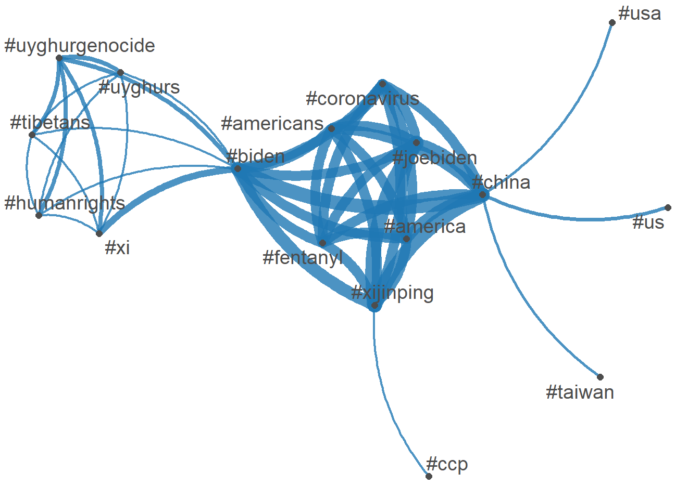
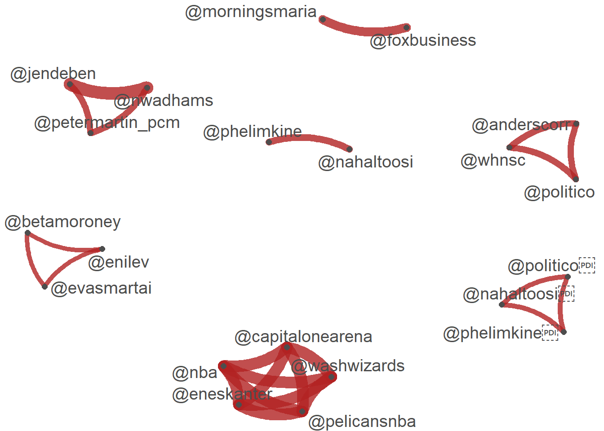
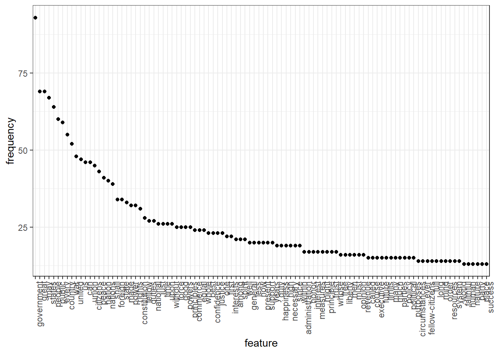
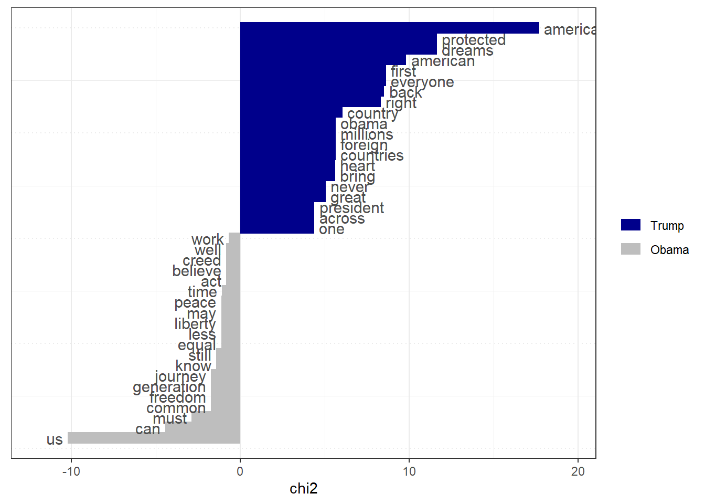
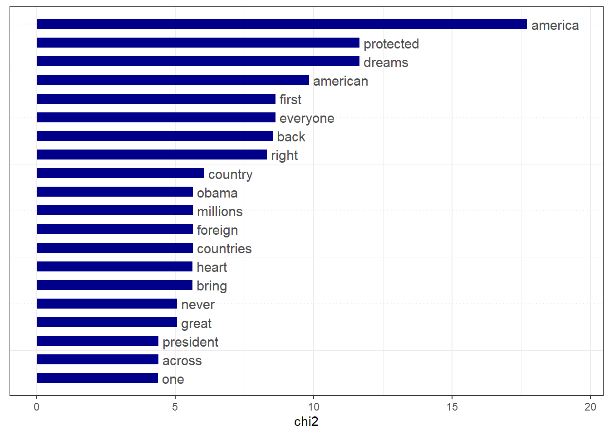
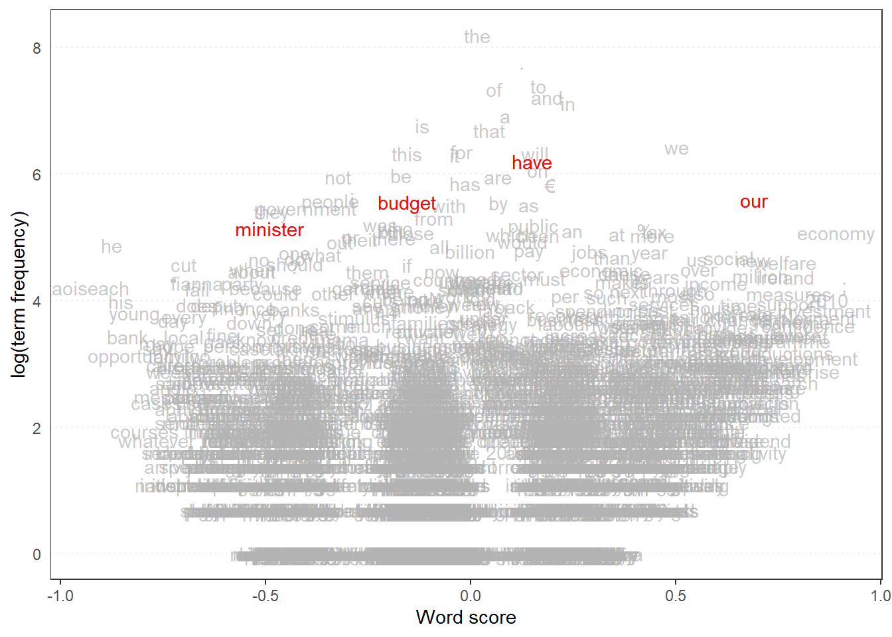
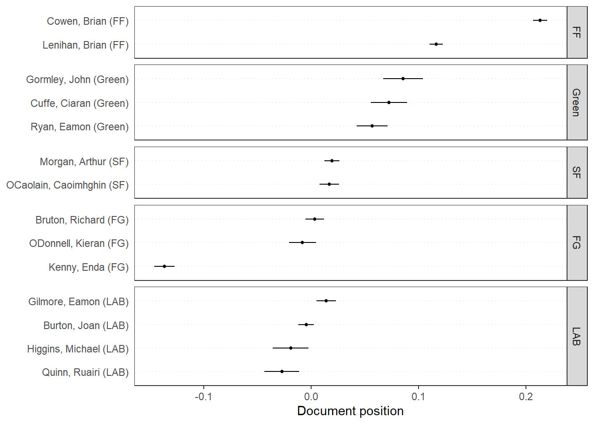
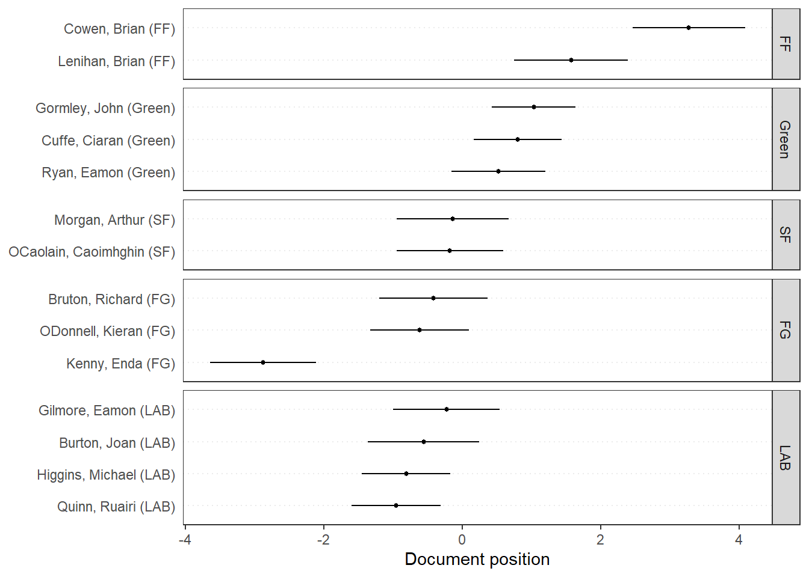
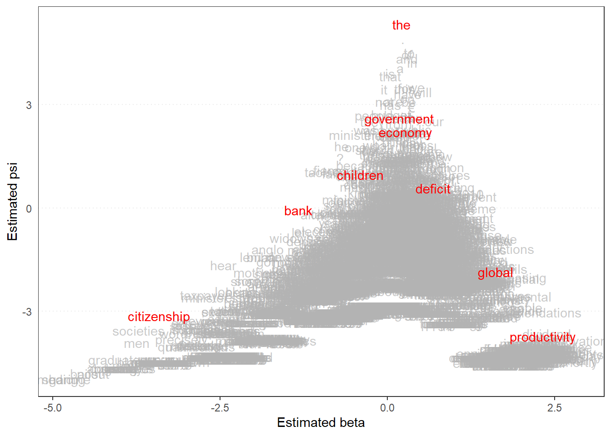
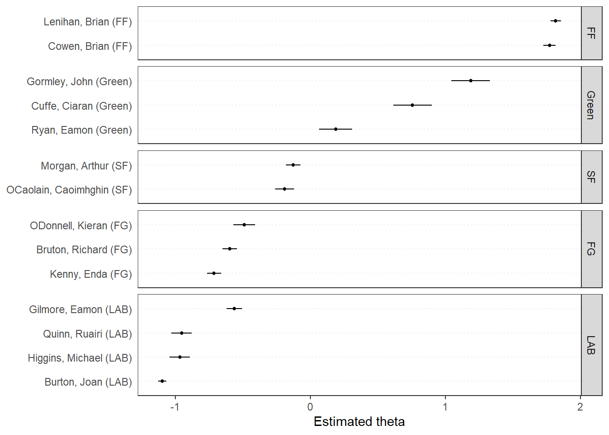

library(quanteda)
library(quanteda.textmodels)
library(quanteda.textplots)
library(readr)
library(ggplot2)
# Twitter data about President Biden and Xi summit in Novemeber 2021
summit <- read_csv("https://raw.githubusercontent.com/datageneration/datamethods/master/textanalytics/summit_11162021.csv")
# View(summit)
sum_twt = summit$text
toks = tokens(sum_twt)
sumtwtdfm <- dfm(toks)
# Latent Semantic Analysis
sum_lsa <- textmodel_lsa(sumtwtdfm)
summary(sum_lsa) Length Class Mode
sk 10 -none- numeric
docs 145200 -none- numeric
features 160030 -none- numeric
matrix_low_rank 232363560 -none- numeric
data 232363560 dgCMatrix S4 tweet_dfm <- tokens(sum_twt, remove_punct = TRUE) %>%
dfm()
head(tweet_dfm)Document-feature matrix of: 6 documents, 15,942 features (99.89% sparse) and 0 docvars.
features
docs breaking news us president biden amp communist china leader xi
text1 1 1 1 1 1 1 1 2 1 1
text2 0 0 0 0 0 0 0 0 0 0
text3 0 0 0 0 1 0 0 0 0 1
text4 0 0 0 1 1 0 0 0 0 1
text5 0 0 0 0 1 0 0 0 0 1
text6 0 0 0 0 1 0 0 0 0 1
[ reached max_nfeat ... 15,932 more features ]tag_dfm <- dfm_select(tweet_dfm, pattern = "#*")
toptag <- names(topfeatures(tag_dfm, 50))
head(toptag, 10) [1] "#china" "#biden" "#xijinping" "#joebiden"
[5] "#america" "#americans" "#coronavirus" "#fentanyl"
[9] "#xi" "#uyghurgenocide"library("quanteda.textplots")
tag_fcm <- fcm(tag_dfm)
head(tag_fcm)Feature co-occurrence matrix of: 6 by 685 features.
features
features #breaking #breakingnews #biden #china #usa #pray4america
#breaking 0 4 4 5 5 0
#breakingnews 0 0 4 5 4 0
#biden 0 0 0 415 44 0
#china 0 0 0 8 76 0
#usa 0 0 0 0 6 0
#pray4america 0 0 0 0 0 0
features
features #joebiden #xijinping #america #americans
#breaking 0 0 0 0
#breakingnews 0 0 0 0
#biden 299 366 301 295
#china 339 433 308 295
#usa 12 14 0 0
#pray4america 0 0 0 0
[ reached max_nfeat ... 675 more features ]topgat_fcm <- fcm_select(tag_fcm, pattern = toptag)
textplot_network(topgat_fcm, min_freq = 50, edge_alpha = 0.8, edge_size = 5)
user_dfm <- dfm_select(tweet_dfm, pattern = "@*")
topuser <- names(topfeatures(user_dfm, 50))
head(topuser, 20) [1] "@potus" "@joebiden" "@politico" "@eneskanter"
[5] "@jendeben" "@nwadhams" "@nba" "@washwizards"
[9] "@pelicansnba" "@capitalonearena" "@kevinliptakcnn" "@foxbusiness"
[13] "@morningsmaria" "@scmpnews" "@uyghur_american" "@nytimes"
[17] "@petermartin_pcm" "@nahaltoosi" "@phelimkine" "@kaylatausche" user_fcm <- fcm(user_dfm)
head(user_fcm, 20)Feature co-occurrence matrix of: 20 by 741 features.
features
features @youtube @bfmtv @cnn @lauhaim @barackobama @joebiden
@youtube 0 0 0 0 0 0
@bfmtv 0 0 1 1 1 1
@cnn 0 0 0 1 1 1
@lauhaim 0 0 0 0 1 1
@barackobama 0 0 0 0 0 1
@joebiden 0 0 0 0 0 3
@kamalaharris 0 0 0 0 0 0
@hillaryclinton 0 0 0 0 0 0
@billclinton 0 0 0 0 0 0
@cbsnews 0 0 0 0 0 0
features
features @kamalaharris @hillaryclinton @billclinton @cbsnews
@youtube 0 0 0 0
@bfmtv 1 1 1 1
@cnn 1 1 1 1
@lauhaim 1 1 1 1
@barackobama 1 1 1 1
@joebiden 1 1 1 1
@kamalaharris 0 1 1 1
@hillaryclinton 0 0 1 1
@billclinton 0 0 0 1
@cbsnews 0 0 0 0
[ reached max_feat ... 10 more features, reached max_nfeat ... 731 more features ]user_fcm <- fcm_select(user_fcm, pattern = topuser)
textplot_network(user_fcm, min_freq = 20, edge_color = "firebrick", edge_alpha = 0.8, edge_size = 5)
# Wordcloud
# based on US presidential inaugural address texts, and metadata (for the corpus), from 1789 to present.
dfm_inaug <- corpus_subset(data_corpus_inaugural, Year <= 1826) %>%
dfm(remove = stopwords('english'), remove_punct = TRUE) %>%
dfm_trim(min_termfreq = 10, verbose = FALSE)
set.seed(100)
textplot_wordcloud(dfm_inaug)
inaug_speech = data_corpus_inaugural
corpus_subset(data_corpus_inaugural,
President %in% c("Trump", "Obama", "Bush")) %>%
tokens(remove_punct = TRUE) %>%
tokens_remove(stopwords("english")) %>%
dfm() %>%
dfm_group(groups = President) %>%
dfm_trim(min_termfreq = 5, verbose = FALSE) %>%
textplot_wordcloud(comparison = TRUE)
textplot_wordcloud(dfm_inaug, min_count = 10,
color = c('red', 'pink', 'green', 'purple', 'orange', 'blue'))
data_corpus_inaugural_subset <-
corpus_subset(data_corpus_inaugural, Year > 1949)
kwic(tokens(data_corpus_inaugural_subset), pattern = "american") %>%
textplot_xray()
textplot_xray(
kwic(data_corpus_inaugural_subset, pattern = "american"),
kwic(data_corpus_inaugural_subset, pattern = "people"),
kwic(data_corpus_inaugural_subset, pattern = "communist")
)
theme_set(theme_bw())
g <- textplot_xray(
kwic(toks, pattern = "american"),
kwic(toks, pattern = "people"),
kwic(toks, pattern = "communist")
)
g + aes(color = keyword) +
scale_color_manual(values = c("blue", "red", "green")) +
theme(legend.position = "none")
library("quanteda.textstats")
features_dfm_inaug <- textstat_frequency(dfm_inaug, n = 100)
# Sort by reverse frequency order
features_dfm_inaug$feature <- with(features_dfm_inaug, reorder(feature, -frequency))
ggplot(features_dfm_inaug, aes(x = feature, y = frequency)) +
geom_point() +
theme(axis.text.x = element_text(angle = 90, hjust = 1))
# Get frequency grouped by president
freq_grouped <- textstat_frequency(dfm(tokens(data_corpus_inaugural_subset)),
groups = data_corpus_inaugural_subset$President)
# Filter the term "american"
freq_american <- subset(freq_grouped, freq_grouped$feature %in% "american")
ggplot(freq_american, aes(x = group, y = frequency)) +
geom_point() +
scale_y_continuous(limits = c(0, 14), breaks = c(seq(0, 14, 2))) +
xlab(NULL) +
ylab("Frequency") +
theme(axis.text.x = element_text(angle = 90, hjust = 1))
dfm_rel_freq <- dfm_weight(dfm(tokens(data_corpus_inaugural_subset)), scheme = "prop") * 100
head(dfm_rel_freq)Document-feature matrix of: 6 documents, 4,346 features (85.57% sparse) and 4 docvars.
features
docs my friends , before i
1953-Eisenhower 0.14582574 0.14582574 4.593511 0.1822822 0.10936930
1957-Eisenhower 0.20975354 0.10487677 6.345045 0.1573152 0.05243838
1961-Kennedy 0.19467878 0.06489293 5.451006 0.1297859 0.32446463
1965-Johnson 0.17543860 0.05847953 5.555556 0.2339181 0.87719298
1969-Nixon 0.28973510 0 5.546358 0.1241722 0.86920530
1973-Nixon 0.05012531 0.05012531 4.812030 0.2005013 0.60150376
features
docs begin the expression of those
1953-Eisenhower 0.03645643 6.234050 0.03645643 5.176814 0.1458257
1957-Eisenhower 0 5.977976 0 5.034085 0.1573152
1961-Kennedy 0.19467878 5.580792 0 4.218040 0.4542505
1965-Johnson 0 4.502924 0 3.333333 0.1754386
1969-Nixon 0 5.629139 0 3.890728 0.4552980
1973-Nixon 0 4.160401 0 3.408521 0.3007519
[ reached max_nfeat ... 4,336 more features ]rel_freq <- textstat_frequency(dfm_rel_freq, groups = dfm_rel_freq$President)
# Filter the term "american"
rel_freq_american <- subset(rel_freq, feature %in% "american")
ggplot(rel_freq_american, aes(x = group, y = frequency)) +
geom_point() +
scale_y_continuous(limits = c(0, 0.7), breaks = c(seq(0, 0.7, 0.1))) +
xlab(NULL) +
ylab("Relative frequency") +
theme(axis.text.x = element_text(angle = 90, hjust = 1))
dfm_weight_pres <- data_corpus_inaugural %>%
corpus_subset(Year > 2000) %>%
tokens(remove_punct = TRUE) %>%
tokens_remove(stopwords("english")) %>%
dfm() %>%
dfm_weight(scheme = "prop")
# Calculate relative frequency by president
freq_weight <- textstat_frequency(dfm_weight_pres, n = 10,
groups = dfm_weight_pres$President)
ggplot(data = freq_weight, aes(x = nrow(freq_weight):1, y = frequency)) +
geom_point() +
facet_wrap(~ group, scales = "free") +
coord_flip() +
scale_x_continuous(breaks = nrow(freq_weight):1,
labels = freq_weight$feature) +
labs(x = NULL, y = "Relative frequency")
# Only select speeches by Obama and Trump
pres_corpus <- corpus_subset(data_corpus_inaugural,
President %in% c("Obama", "Trump"))
# Create a dfm grouped by president
pres_dfm <- tokens(pres_corpus, remove_punct = TRUE) %>%
tokens_remove(stopwords("english")) %>%
tokens_group(groups = President) %>%
dfm()
# Calculate keyness and determine Trump as target group
result_keyness <- textstat_keyness(pres_dfm, target = "Trump")
# Plot estimated word keyness
textplot_keyness(result_keyness) 
# Plot without the reference text (in this case Obama)
textplot_keyness(result_keyness, show_reference = FALSE)
library("quanteda.textmodels")
# Transform corpus to dfm
data(data_corpus_irishbudget2010, package = "quanteda.textmodels")
ie_dfm <- dfm(tokens(data_corpus_irishbudget2010))
# Set reference scores
refscores <- c(rep(NA, 4), 1, -1, rep(NA, 8))
# Predict Wordscores model
ws <- textmodel_wordscores(ie_dfm, y = refscores, smooth = 1)
# Plot estimated word positions (highlight words and print them in red)
textplot_scale1d(ws,
highlighted = c("minister", "have", "our", "budget"),
highlighted_color = "red")
# Get predictions
pred <- predict(ws, se.fit = TRUE)
# Plot estimated document positions and group by "party" variable
textplot_scale1d(pred, margin = "documents",
groups = docvars(data_corpus_irishbudget2010, "party"))
# Plot estimated document positions using the LBG transformation and group by "party" variable
pred_lbg <- predict(ws, se.fit = TRUE, rescaling = "lbg")
textplot_scale1d(pred_lbg, margin = "documents",
groups = docvars(data_corpus_irishbudget2010, "party"))
# Estimate Wordfish model
library("quanteda.textmodels")
wf <- textmodel_wordfish(dfm(tokens(data_corpus_irishbudget2010)), dir = c(6, 5))
# Plot estimated word positions
textplot_scale1d(wf, margin = "features",
highlighted = c("government", "global", "children",
"bank", "economy", "the", "citizenship",
"productivity", "deficit"),
highlighted_color = "red")
# Plot estimated document positions
textplot_scale1d(wf, groups = data_corpus_irishbudget2010$party)
# Transform corpus to dfm
ie_dfm <- dfm(tokens(data_corpus_irishbudget2010))
# Run correspondence analysis on dfm
ca <- textmodel_ca(ie_dfm)
# Plot estimated positions and group by party
textplot_scale1d(ca, margin = "documents",
groups = docvars(data_corpus_irishbudget2010, "party"))